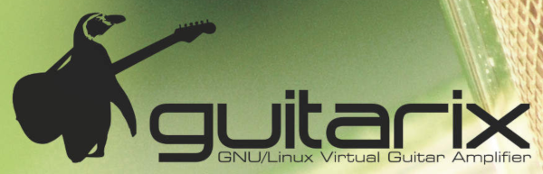
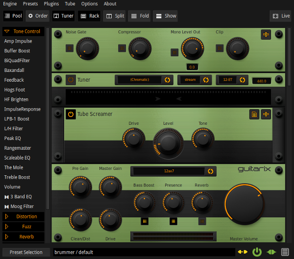
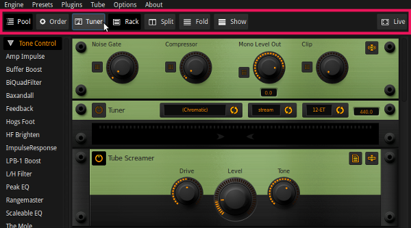
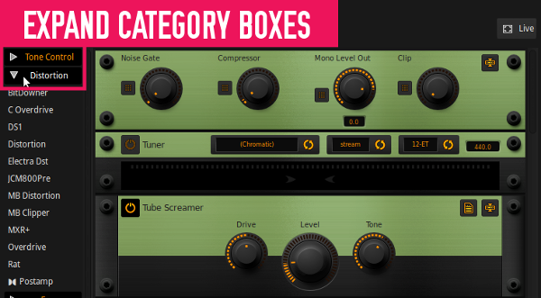
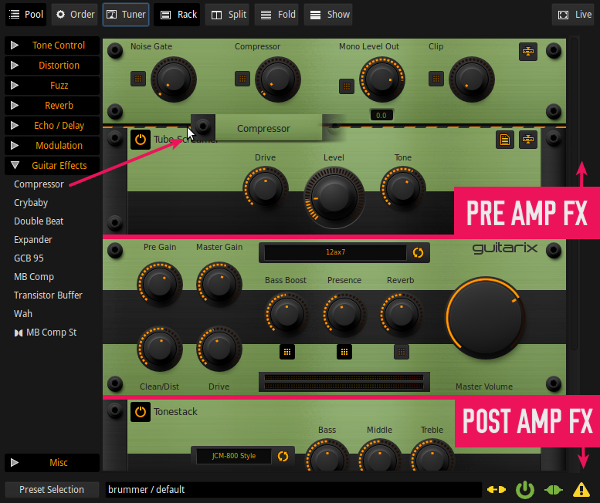
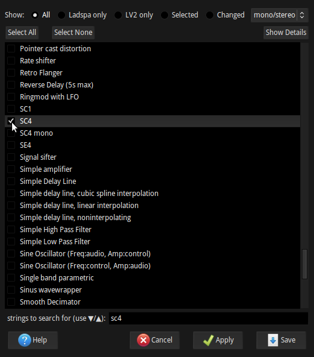
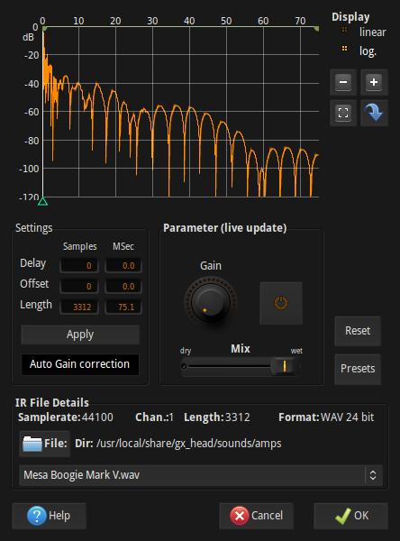
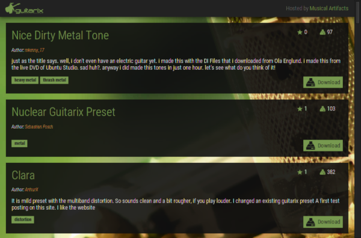
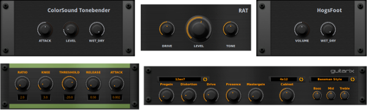

Ultimate Guide to Getting Started With Guitarix

What is Guitarix?
Guitarix is a modular, virtual amplifier for Linux. With Guitarix you can choose different preamp and amp models, combine them with various effects and speaker cabinet emulations to come up with your very own tones. Guitarix comes as a standalone application but its modules are also available in the LV2 plugin format, which you can incorporate into your DAW of choice. Furthermore, it can even be run headless, so you can turn a Raspberry Pi, or any other such devices, into a dedicated amp modeler. You can even control Guitarix via a MIDI controller or foot-board.

Connecting up your guitar into Guitarix
Before you get started, you will need to know how to correctly get your guitar signal into your computer. You will first need to make sure your audio interface is selected by the Jack Audio Connection Kit. This must be selected and JACK must be started before starting up Guitarix. There are various ways to do this but two of the most popular are to use Qjackctl or alternatively, Cadence, which is bundled with KXStudio. To learn more about getting JACK set up and to understand the fundamentals of using it, you can read the LMP guide -
Demystifying JACK – A Beginners Guide to Getting Started with JACK
Your next consideration depends on what type of audio interface you are using. It's important to match the guitars high output impedance level to that of your audio interfaces input or else there will be degradation of the guitar signal, notably, the high frequencies will drop off and you will have a thin, noisy and possibly distorted signal. There are a few ways to do this correctly -
- If your audio interface has an instrument input, use this. Alternatively, some interfaces have inputs that can be switched between 'line in' and 'instrument'. In this case, make sure the input you are using is set to 'instrument'. Note that on some interfaces, instrument inputs are labeled Hi-Z.
- If your audio interface doesn't have an instrument input, you will need a DI box. This will correct the impedance mismatch so that you can then connect it up to a 'line in' or 'mic' input.
Next, start up Guitarix. When you have your guitar hooked up into your computers soundcard, you will next need to connect up it up to Guitarix. You can use the patchbay area of Qjackctl or alternatively more graphical programs such as Patchage or Catia, to make your connections. For the standalone Guitarix application, here is how your connections should look.

The guitar is connected into input one on the audio interface. It is then routed through Guitarix while the sound goes out through output 1 and 2 of the interface and into the speakers
Note that Guitarix is broken up into two JACK modules. The first one is called gx_head_amp, which is a mono module containing the amp and mono rack effects. The second is a stereo module for stereo rack effects. If these are not correctly connected up, make sure the output of the amp is going into the input of the stereo effects section. You can then treat them as one module in most cases; however, you can insert effects from other JACK applications in between gx_head_amp and gx_head_fx if you wish.
Understanding and setting your latency settings
Latency is the length of time that it takes your computer to process a signal and give you back the result. Audio latency is not something that you want if you are playing your guitar live through Guitarix. This will result in the sound being played back through your speakers with a slight delay. These delays, while small, can completely throw you off your performance. For this reason, you will want to get your audio latency low enough that the delay is not perceivable. However, this comes at the cost of increased CPU usage.
How low you can get your latency settings depends on both your hardware and software set up. For this purpose, an audio based Linux distribution is recommended, as these will have a low latency kernel and other optimizations that will allow you to get superior performance over stock Linux distributions for low latency audio.
You can adjust your latency (frame rate) in Qjackctl or Cadence but if you are using the standalone Guitarix client, there is an easier way of doing this. If you go to
Interface explained
When you first start up Guitarix, you will be presented with the amp head and nothing more. You will find some toggle buttons along the top. These do the following -
Pool
Toggles the visibility of the effects plugin bar
Order
Collapses the height of all effects modules and allows you to easily click and drag around their order. This is useful for reordering large amounts of effects.
Tuner
Toggles the visibility of the tuner rack
Rack
Toggles the visibility of rack effects modules.
Split
Displays rack modules across two columns, mono plugins in the left column, stereo plugins in the right.
Fold and Show buttons
The 'Fold' button collapses the height of all rack effects modules. The 'Show' button expands them again. As opposed to the 'Order' button which is for reordering your signal path, 'Fold' doesn't collapse the height of the amp head and folded modules still have access to a slider control, presets, etc.
Live play
Shows a minimal fullscreen display with preset information. Useful for live performance.

Next you will want to start adding and arranging modules and effects. Press the 'Effects' toggle button. You will now see all available plugins and effects down the left hand side. These are categorized into collapsible boxes. You can expand any of these categories by clicking on a category box.


To add an effect to your signal chain, simply click and drag it across to the rack area and drop it into position. Effects default to disabled when first added to the rack. On the left hand side of each effect module is a button, which you can toggle to enable or disable the effect. These modules can be moved around in various orders, and can be added before (above) or after (below) the preamp section. Just hover over the rack handles on either side of a module, click and drag to rearrange the order. To remove a module from the rack, grab it and drag it back into the plugin bar. The signal is processed through these modules from top to bottom.
Note – If you add stereo plugins, they can only be added to the bottom of the rack. This is because stereo effects are processed after mono effects, and hence why Guitarix shows up as two separate JACK modules. If you are using the horizontal option for displaying rack effects, the signal flows from top to bottom through the mono rack on the left and then into the stereo rack on the right, again being processed from top to bottom.
More about Signal Flow
The order of your signal chain is important. Below is the basic structure that will mimic a real amp and speaker cabinet set up. You will need to add a tonestack and cabinet module below (after) the preamp. You will find both of these modules in the 'Tone control' category.

Preamp – boosts your guitar signal, with tube emulation
Tone Stack – processes the guitar sound. There are selectable amp models which you can choose
Cabinet – emulates the playback through selectable guitar cabinets
Guitarix comes with the following preamp models
| Tube | Type | Application |
|---|---|---|
| 12AX7 (also known as ECC83) | Dual Triode (high gain) | Most common preamp tube, notably used in Marshall and Vox amps |
| 12AU7 (also known as ECC82) | Dual Triode (low gain) | Used in some vintage Gibson and Marshall amps |
| 12AT7 (also known as ECC81) | Dual Triode (medium gain) | Used in driver and phase-inverter stages |
| 6DJ8 (also known as ECC88) | High Transconductance Dual Triode (medium gain) | Used in some Hi-Fi amps, also in TV's |
| 6C16 | Triode-Pentode | Used in some Hi-Fi and headphone amps |
| 6V6 | Beam power tetrode | Very common power amp tube |
Amp Head Controls
Pregain – input level of the guitar
Master gain - amount of signal sent from the pre-amp to the power section
Clean/dist – amount of distortion
Drive – signal gain

Master out – This control is an exception to the top to bottom signal flow rule. Turning this up and down it will boost or attenuate the final output signal (to JACK signal). This is useful for attenuating the signal so it doesn't clip on its way out of Guitarix.
Effects modules
Guitarix comes with an extensive list of effects including compression, distortion, modulation, reverb, delay, EQ, etc. Some of the effects modules that are included in Guitarix are influenced by some popular hardware units, for example the Tube Screamer is, not surprisingly, based off of the Ibanez Tube Screamer.
As well as its inbuilt effects, Guitarix can also load up LAPSPA and LV2 plugins. These have to be specifically enabled for them to show up in the plugin sidebar. To do this, go to
Note - while most LV2 plugins will work in Guitarix, some may use LV2 features that Guitarix does not support

There are no hard and fast rules for which order to place your effects in. If something achieves the sound you are looking for, then it is the correct way for that purpose, however, there are some generally accepted best practices for the order in which most guitarists prefer to have their effects. The following are some effects and their recommended order, from top to bottom, in the signal chain
| EFFECT | RECOMMENDED GUITARIX MODULE | NOTES/TIPS |
|---|
| PRE AMP EFFECTS | ||
|---|---|---|
| Noise gate | Built in noise gate | Cuts off low level noise. This is built into Guitarix as first in the signal path. |
| Compressor | Compressor Category – Guitar Effects |
Compressors work best when placed before any sound shaping effects. |
| Overdrive/Distortion | Tube Screamer Category - Distortion |
The tube screamer is a popular guitar pedal. It's often used to add a signal boost without driving up the gain setting too much. This hotter signal can drive the preamp section harder. |
| Graphic EQ | Graphic EQ Category – Tone Control |
Useful for sculpting your tone, cutting problematic frequencies, mid boost, etc. |
| Wah | GCB 95 Category – Guitar Effects |
The GCB 95 is based off of a crybaby wah pedal. If you have a MIDI controlled expression pedal, you can use it to control this. |
| Chorus | Chorus Mono Category – Modulation |
|
| POST AMP EFFECTS | ||
|---|---|---|
| Reverb | Zita Rev1 Category - Reverb |
Can add space around your guitar. More suited to clean/lead tones. |
| Delay (sometimes called Echo) | Digital Stereo Delay Category – Echo/Delay |
Delay, or Echo, can often be more suited than reverb. Whereas reverb can blend a guitar into the back, delay can make a guitars sound more upfront. |
| Convolution | Convolver Category - Reverb |
Can be used for adding reverb impulse response files but also is a good alternative to using the cabinet module if you have impulse response files of cabinets |
Convolution
Guitarix includes a convolution module, called Convolver, that allows you to load up impulse response files. You will find Convolver under the Reverb category. With this you can load up reverb impulses although another very good use for convolution is using it as a speaker cabinet emulator by loading up speaker cabinet impulses.
Any impulse responses in the .wav file format can be used with Guitarix. There are many of these that can be found in various forums on the internet. To get you started though, Guitarix comes with some guitar cabinet impulse response files preinstalled. To load these up, click on the Setup button in the Convolver module. Next, click on File. You will see two bookmarks on the left called ‘amps’ and ‘bands’. In these folders you will find .wav files that you can load up as impulse responses.
Note – If you are using impulse responses for your cabinet emulation, make sure you disable your cabinet module.

Controlling Guitarix via MIDI
Almost all parameters in Guitarix can be controlled via MIDI. This includes changing the values of knobs right through to turning on and off modules and even scrolling through menus.
Before you create any MIDI bindings, you will first need to make sure that your MIDI device is hooked up to Guitarix. You can make this connection using any of the many connection tools that Linux has to offer but here we will use the inbuilt MIDI connections window. Go to

Patchage showing an Akai MPK mini connected into Guitarix
Once you have your MIDI device connected up, creating bindings is as simple as pressing the middle mouse button on whichever parameters you wish to control, followed by moving what you want to bind it to on your controller.
Being able to control so much this way makes Guitarix a very good tool for live use. If you have a MIDI foot-board, for example the Behringer FCB1010, you can bind your foot switches to turn various effects modules on and off. If your MIDI controller has knobs, you can also bind parameters to these. Expression pedals can be binded to Wah effects, etc. Bindings can be viewed and edited by navigating to

Preset Management
If you press the 'Preset Selection' button on the bottom left of Guitarix, the preset manager will pop up along the bottom. There are already a few presets here but it's easy to add and manage your own. To create a new preset, click on new in the scratchpad section. This will prompt you to name your preset. You can then press save to save your new preset, or tweak it more before doing so. You can also create new banks for your presets and organize them.
Also, thanks to the wonderful musical-artifacts.com, you can now find and load up presets from directly within Guitarix. To do this, click on the 'Online' button on the left of the preset selection dialog. This will pop up a new window where you can search through Guitarix presets that are hosted on musical-artifacts.com. To install a preset, simply press on a presets 'download' button. This will download it and place it into your list of presets. It's really that simple.

Search Guitarix presets on musical-artifacts.com, without leaving Guitarix!
The various ways of using Guitarix
Guitarix can be used in many different ways, as a practice tool, a recording tool and a reamping tool. Having both the standalone version and LV2 plugin versions, allows for great flexibility of use -
Standalone
As a live/live practice tool
To record directly into your DAW

As an insert in your DAW

LV2 Plugins
Another option is to use the LV2 plugins on a channel strip and record your guitar signal into your DAW dry. This way you have great flexibility in processing your sound later, and tweaking it to perfection, as you always have the original dry performance.

GxAmplifier LV2 plugin running in Qtractor
Gxamplifier is the main guitar LV2 amp modeling plugin. As you can see, this plugin consolidates the main amp signal flow mentioned above, into one plugin. So, you have the preamp choice on the left, cabinet choice in the middle and tonestack choice on the right. When switching between preamp types, the plugins skin changes to a suitable amp type and matching knobs. Additionally, the cabinet and tonestack menus have an “off” option. This is particularly useful in relation to the cabinet section, as maybe you would prefer to use an impulse response after the plugin for you cabinet emulation. In this case, disable the cabinet section with the “off” option and add an impulse response plugin after Gxamplifier. Two good choices for impulse response plugins are IR LV2 and Klangfalter.
Aswell as the Gxamplifier, Guitarix have also ported over many of their effects modules as LV2 plugins. All of these plugins are prefixed by Gx, so if you search for gx in your plugin manager, you will quickly find all the plugins.

Summary
Guitarix is a very flexible tool. It can be utilized in many different types of set ups. An interesting project is the MOD, which is a hardware sound processing pedal running Guitarix and its various modules. If you want to check out some of the sounds that Guitarix can make, you can check out the MOD website where you will find some sound demos.
Written by Conor Mc Cormack